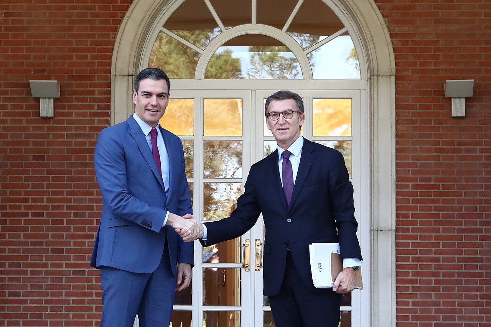
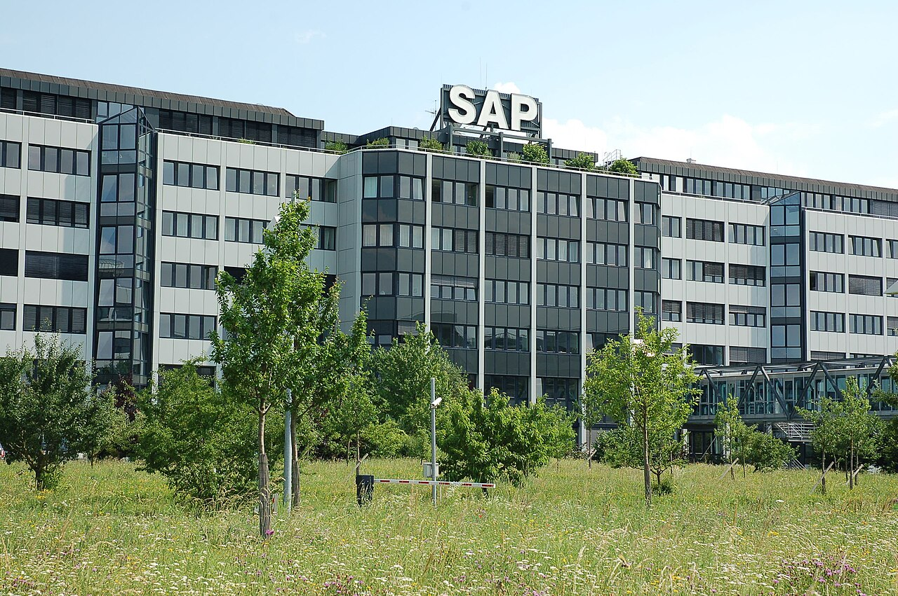
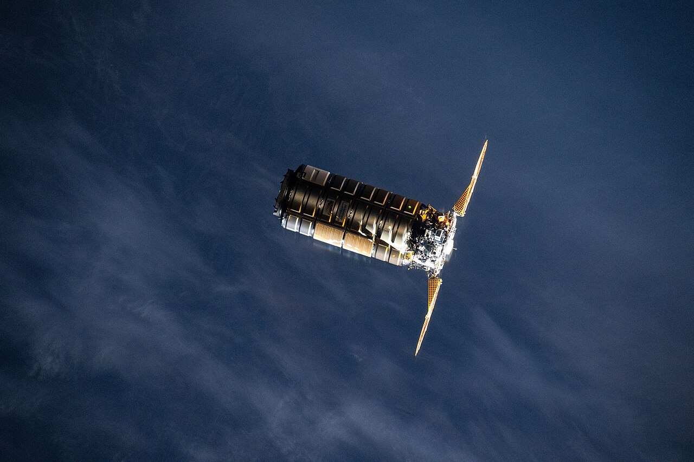
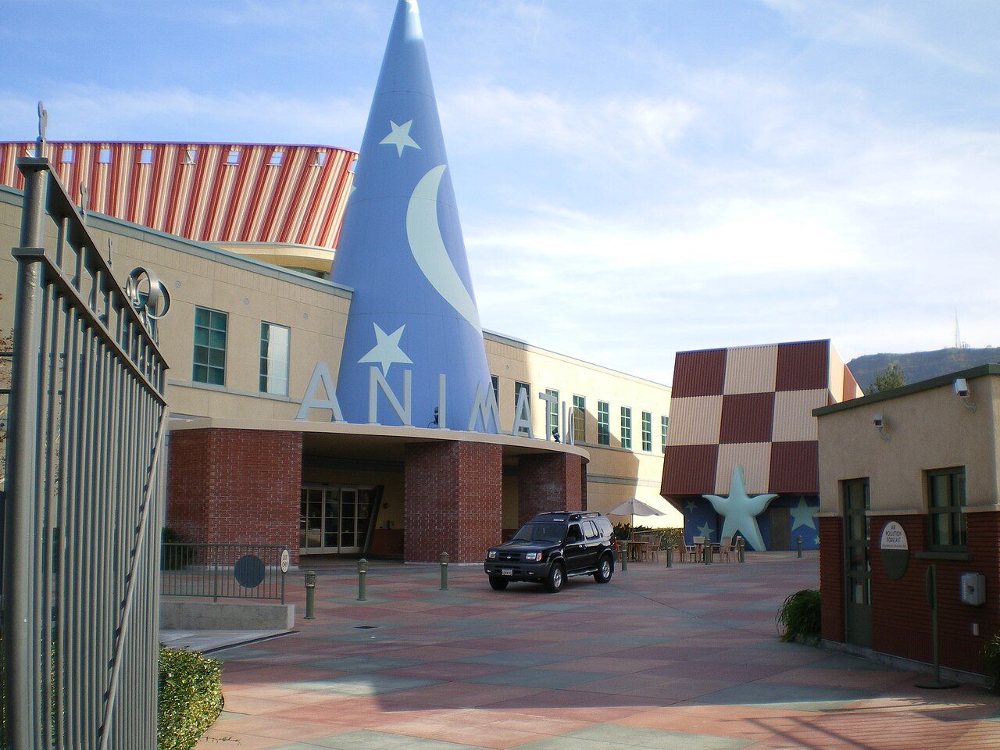
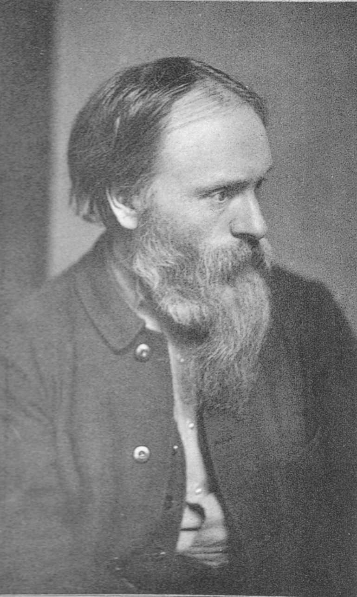
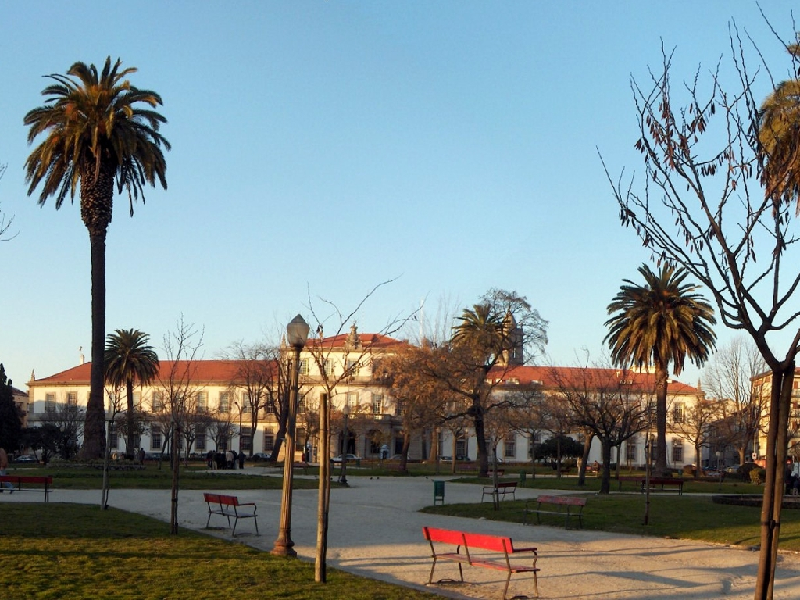

Edição n.º 036 · 28 nov 2026Portugal · Leitura independenteEnglish
Sábado, 28 de novembro de 2026 · 18 notícias e 4 artigos culturais · Agenda Porto · Corrida do dinossauro e puzzle
Em 2 minutos
Espanha vota amanhã em legislativas antecipadas: as sondagens dão a vitória ao PP de Feijóo, sem maioria absoluta, e um Vox quase a duplicar; Sánchez diz que ainda pode ganhar. Ler →
A idade da reforma deve subir para 67 anos em 2028, segundo contas da Lusa e do ECO com dados provisórios do INE; quem se reformar mais cedo em 2027 perde 18% da pensão. Ler →
O Chega entregou um projeto de lei para repor o IVA a 0% em 46 tipos de alimentos, de janeiro a março de 2027; o PS repete que não vai abrir uma crise política. Ler →
A SAP, a maior empresa de software da Europa, confirmou um ciberataque; o acesso dos piratas ao código-fonte foi noticiado pela Der Spiegel, mas não confirmado pela empresa. Ler →
Os EUA dispararam contra um navio que tentava furar o bloqueio aos portos do Irão; Teerão diz que um petroleiro bateu numa mina em Ormuz, o que não foi verificado. Ler →
Boa notícia: a Gavi vai repor parte do dinheiro para vacinas contra a malária em África, com até 214 milhões de dólares de filantropos, se o conselho aprovar em dezembro. Ler →
O que acompanhar
Domingo, 29 nov.Eleições legislativas antecipadas em Espanha; as sondagens apontam para uma vitória do PP sem maioria absoluta, mas são previsões, não resultados. Ler →
Domingo, 29 nov.Lançamento previsto da nave de carga Cygnus XL para a Estação Espacial, às 15h47 de Lisboa, num Falcon 9; se houver adiamento, nova janela na segunda, às 15h24. Ler →
Segunda, 30 nov.Combustíveis devem descer, segundo a previsão do ACP, já com o corte parcial no desconto do imposto; os preços finais dependem de cada posto. Ler →
Quinta, 3 dez.Debate de urgência no Parlamento, pedido pelo Chega, sobre o Orçamento do Estado para 2027 e as medidas da oposição que o Governo diz que não vai aplicar.
Manchete · Mundo
Espanha vai a votos amanhã: sondagens dão vitória ao PP de Feijóo e um Vox quase a duplicar, mas Sánchez diz que ainda pode ganhar
Eleições marcadas para domingo, 29 nov. (facto) · vitória do PP e maioria PP–Vox são previsões das sondagens ·

Imagem de arquivo
Pedro Sánchez recebe Alberto Núñez Feijóo na Moncloa, numa reunião anterior (imagem de arquivo; não mostra a campanha). Autoria: Pool Moncloa/Fernando Calvo · Licença: Attribution · origem
Os espanhóis escolhem amanhã, domingo, 29 de novembro, um novo parlamento, em eleições legislativas antecipadas. A campanha terminou ontem, sexta-feira: o primeiro-ministro socialista, Pedro Sánchez, fechou-a num comício em Madrid, com cerca de 12 mil pessoas, e o líder do Partido Popular (PP, centro-direita), Alberto Núñez Feijóo, em Sevilha, segundo a RTP. As sondagens dão a vitória ao PP, mas sem maioria absoluta, que exige 176 dos 350 deputados.
O que dizem as sondagens? A média citada pelo Observador, a uma semana da votação, punha o PP perto dos 31% (cerca de 129 deputados), o PSOE de Sánchez perto dos 28% e o Vox, de extrema-direita, perto dos 19%, o que quase duplicaria os seus atuais 33 lugares. Juntos, PP e Vox ultrapassariam os 190 deputados. A distância entre PP e PSOE encurtou de cerca de seis para pouco mais de três pontos desde a convocação, e duas sondagens admitiam mesmo uma vitória socialista. A plataforma de esquerda Frente Ampla, da antiga presidente da câmara de Barcelona Ada Colau, surgia abaixo dos 7%. São previsões, não resultados.
Sánchez convocou estas eleições a 5 de outubro, dois dias depois de o parlamento ter chumbado dois decretos com medidas para a habitação, segundo a RTP. A legislatura só terminaria em julho de 2027. A habitação é a principal preocupação dos espanhóis, à frente da imigração e da economia, segundo um inquérito do CIS (o centro público de estudos sociológicos) citado pela Euronews; as rendas subiram em média cerca de 44% em cinco anos, segundo o portal Idealista.
Nas últimas horas de campanha, cada um puxou pelo seu eleitorado. «Estas eleições tratam da necessidade de Espanha avançar e não voltar ao passado», disse Sánchez, que exigiu ao PP que aceite os resultados. Feijóo prometeu «uma nova era em Espanha» se os eleitores votarem juntos, e o líder do Vox, Santiago Abascal, avisou que «as urnas não se enchem com sondagens favoráveis», segundo a RTP. Feijóo já admitiu governar com o Vox, com «linhas vermelhas», e os dois partidos governam juntos em quatro regiões desde este ano. Se nenhum candidato conseguir a confiança do parlamento em dois meses após a primeira votação, há novas eleições.
Confirmado por duas fontes independentes. Fim da campanha, comícios de Sánchez (cerca de 12 mil pessoas, Madrid) e Feijóo (Sevilha), maioria de 176 deputados e as citações de Sánchez, Feijóo e Abascal na RTP (27 nov.). Números das sondagens (médias de vários meios e dois estudos, sem nome das empresas), convocação a 5 de outubro, Frente Ampla e governos PP–Vox em quatro regiões no Observador (22 nov.). Motivo da antecipação (chumbo dos decretos da habitação) e fim previsto da legislatura na RTP (5 out.). Inquérito do CIS, rendas (Idealista) e regra dos dois meses na Euronews (27 nov.); a Euronews diz que as eleições foram convocadas «em julho», o que contradiz a RTP e o Observador — seguiu-se a data de 5 de outubro. As sondagens são de há uma semana; não se consultaram as mais recentes. «Linhas vermelhas» de Feijóo: título do Observador (8 nov.), página não aberta. Horário das urnas não confirmado. Imagem: ficheiro encontrado na pesquisa do Commons; a página não pôde ser aberta, e o que mostra resulta do nome do ficheiro.
Tecnologia, IA e Cibersegurança
08 notícias · 3 cibersegurança · 3 IA · 2 tecnologia · cerca de 11 min de leitura

Imagem de arquivo
Sede da SAP em Walldorf, na Alemanha (imagem de arquivo; não mostra o ataque). Autoria: Vladislav Bezrukov from Walldorf, Germany · Licença: CC BY 2.0 · origem
01 / Cibersegurança 1/3
SAP confirma ciberataque: piratas terão usado chaves de funcionários para entrar no código da gigante alemã do software
Incidente confirmado pela SAP · acesso ao código-fonte noticiado pela imprensa alemã, não confirmado pela empresa ·
A SAP, a maior empresa de software da Europa, com sede em Walldorf, na Alemanha, confirmou que foi alvo de um ciberataque. A revista Der Spiegel revelou o caso na quinta-feira, 26 de novembro: segundo as suas fontes, os piratas roubaram «tokens» de funcionários — chaves digitais que provam quem está a entrar num sistema — e usaram-nos para copiar e alterar código-fonte da empresa guardado no GitHub, a plataforma onde os programadores trabalham o código.
Continuar a lerMostrar menos
O que diz a SAP. A empresa confirmou o incidente, mas não respondeu a perguntas detalhadas. Diz que detetou «atividade suspeita», que agiu de imediato para proteger os clientes e que, até agora, não encontrou sinais de acesso não autorizado aos dados de negócio dos clientes. Não disse quem está por trás do ataque, como entraram, nem se o problema está resolvido.
Internamente, o caso tem nome de código: «Project Granite». Segundo o Handelsblatt, a SAP limitou o acesso ao GitHub, parou processos automáticos de desenvolvimento e trocou as chaves digitais usadas para certificar que o seu software é autêntico. A agência alemã dpa viu parte das comunicações internas e diz que os funcionários foram avisados dias antes de o caso se tornar público. A imprensa alemã fala na possibilidade de os atacantes terem usado «agentes» de IA, mas isso é, para já, uma suspeita.
Porque é que isto importa? O software da SAP gere a contabilidade, os salários e as cadeias de abastecimento de milhares de grandes empresas e organismos públicos em todo o mundo, incluindo em Portugal. Falta saber se o código foi de facto acedido e se alguma alteração chegou aos clientes. O caso surge na mesma semana em que a Bloomberg noticiou que a SAP pondera cortar pelo menos 10 mil postos de trabalho numa reestruturação centrada na IA.
Confirmado por duas fontes independentes. A confirmação da SAP e a frase sobre a ausência de acesso a dados de clientes coincidem no relato da DTS/Presse Augsburg (que resume a Der Spiegel), no Canadian HR Reporter (que compila Der Spiegel, dpa, Handelsblatt e The Record) e na Seeking Alpha. O roubo de «tokens» e a cópia/alteração de código vêm de fontes anónimas da Der Spiegel; a SAP não os confirmou. «Project Granite» e as medidas internas vêm do Handelsblatt (citado). Os cortes de 10 mil empregos vêm da Bloomberg (citada pelo blogue Born e pelo Tek). A página do Commons da imagem não pôde ser aberta; o nome do ficheiro vem dos resultados de pesquisa do Commons.
02 / Cibersegurança 2/3
Piratas entraram na principal «nuvem» informática da Força Aérea dos EUA, onde correm sistemas de radar, munições e pessoal
Intrusão noticiada pela Reuters com base em três fontes · Força Aérea não confirma nem desmente ·
Mais um caso nos sistemas do Estado norte-americano: piratas informáticos entraram no Cloud One, a principal plataforma de computação em «nuvem» da Força Aérea dos EUA. A notícia foi dada pela Reuters na sexta-feira, 27 de novembro, com base em três pessoas que conhecem o caso. A intrusão terá sido descoberta há cerca de um mês, durante uma atualização do sistema.
Continuar a lerMostrar menos
O que está em causa. O Cloud One existe desde 2017 e funciona com servidores da Microsoft, Amazon, Oracle e Google. Ali correm aplicações sobre operações militares, pessoal, logística e manutenção — incluindo, segundo a Reuters, um sistema que recebe dados de radares de defesa aérea e outro que controla munições. Uma das fontes diz que os atacantes aproveitaram uma falha de software para chegar ao «painel de controlo» da plataforma.
O que falta saber: quem são os piratas, até onde chegaram e se levaram dados. Os investigadores pediram ao Comando Cibernético dos EUA que avalie os estragos. Entretanto, a plataforma está afetada: mudanças de aplicações foram suspensas, atualizações de software bloqueadas e alguns utilizadores perderam permissões de administrador.
A Força Aérea disse apenas que não comenta a segurança nem o estado de redes específicas, e que toma medidas para proteger a informação. É pelo menos o sétimo incidente informático recente em organismos do governo dos EUA, depois de casos na FinCEN, a agência das Finanças que recebe alertas de branqueamento de capitais, e na CIA.
Fonte única: Toda a informação vem da investigação exclusiva da Reuters (Mike Stone e Raphael Satter), lida na republicação da AOL, que se baseia em três fontes anónimas. O BleepingComputer confirma os mesmos dados, mas cita a Reuters, por isso não é uma fonte independente. A Força Aérea não confirmou a intrusão. A página do Commons da imagem não pôde ser aberta; o nome do ficheiro vem dos resultados de pesquisa do Commons.03 / Cibersegurança 3/3
Jornal japonês Nikkei confirma fuga de dados de 5,4 milhões de leitores através de uma ferramenta de marketing
Fuga confirmada pelo Nikkei · sem uso indevido conhecido · cartões e palavras-passe não incluídos ·
O Nikkei, o maior jornal económico do Japão, confirmou na sexta-feira, 27 de novembro, que saíram dados pessoais de 5.399.986 utilizadores registados. O problema não esteve nos sistemas do jornal, mas no KARTE, uma ferramenta de marketing da empresa japonesa Plaid, a quem o Nikkei entregava esses dados para analisar o comportamento dos leitores.
Continuar a lerMostrar menos
Que dados saíram? Género, ano e mês de nascimento, e endereços de e-mail e números de telefone — estes dois «convertidos» noutras sequências de caracteres. O Nikkei garante que os originais não saíram e que a conversão não se pode desfazer, mas não explicou como foi feita. Números de cartão de crédito e palavras-passe não estavam entre os dados entregues à Plaid. Até agora, o jornal diz não ter sinais de que a informação tenha sido usada de forma abusiva.
A cronologia: a Plaid detetou o acesso de terceiros a 13 de novembro e desligou todo o serviço KARTE; dois dias depois avisou o Nikkei, que tornou pública a suspeita a 17. Segundo a Plaid, os atacantes aproveitaram uma vulnerabilidade num processo interno. Outras empresas japonesas que usam a mesma ferramenta, como o banco Mitsui Sumitomo e a companhia aérea Peach, também foram afetadas.
Ou seja: um ataque a um único fornecedor chegou a milhões de pessoas que nunca tinham ouvido falar dele. O Nikkei vai contactar diretamente os afetados e comunicar o caso à autoridade japonesa de proteção de dados. A Plaid aconselha a desconfiar de e-mails e SMS suspeitos.
Confirmado por duas fontes independentes. Os números e a cronologia vêm do comunicado do Nikkei de 27 de novembro e das notas da Plaid, resumidos pelo site japonês Joho no Todai; o Tokyo Reporter (que cita a FNN) confirma os 5,4 milhões, o tipo de dados e a ausência de cartões. Não foi possível abrir diretamente os comunicados do Nikkei e da Plaid. A página do Commons da imagem não pôde ser aberta; o nome do ficheiro vem dos resultados de pesquisa do Commons.04 / Inteligência Artificial 1/3
Dois médicos apanhados com óculos inteligentes na prova de acesso à especialidade; um deles usava IA
Casos confirmados pelo Ministério da Saúde · validade das provas ainda por decidir pelo júri ·
Dois médicos foram apanhados com óculos inteligentes na Prova Nacional de Acesso (PNA), o exame que ordena os candidatos à formação numa especialidade médica. Aconteceu na quarta-feira, 25 de novembro, no Europarque, em Santa Maria da Feira, o local de prova da zona Norte. O Ministério da Saúde confirmou os casos na quinta-feira, depois de outros candidatos os terem contado à Lusa.
Continuar a lerMostrar menos
Como funcionava? Um dos candidatos usava óculos modificados com inteligência artificial. O outro tinha óculos com uma câmara que transmitia imagens para alguém fora da sala, que lhe soprava as respostas por auriculares. As equipas de vigilância detetaram os aparelhos, os delegados confirmaram e registaram as ocorrências e os equipamentos foram retirados.
O regulamento da prova proíbe qualquer aparelho eletrónico, e usá-lo pode levar à anulação do exame. Quem decide é o júri, depois de ouvir o gabinete que organiza a prova. Os candidatos não foram identificados.
O ministério diz que os casos não mostram, por si só, uma falha de segurança, mas está a estudar novas medidas — incluindo soluções tecnológicas — para detetar estes aparelhos. Admite que é preciso equilibrar eficácia, custos e logística. Ou seja: os óculos com IA, cada vez mais discretos e baratos, estão a obrigar a repensar a vigilância dos exames.
Confirmado por duas fontes independentes. Os factos vêm da Lusa (publicada pelo DN) e da RTP, que coincidem no número de médicos, no tipo de aparelhos e no risco de anulação; o local, a data e a posição do ministério vêm do texto da Lusa. Não se confirmou quantos candidatos fizeram a prova. A página do Commons da imagem não pôde ser aberta; o nome do ficheiro vem dos resultados de pesquisa do Commons.05 / Inteligência Artificial 2/3
Novos modelos chineses de IA atrasam-se: travão dos EUA aos chips e às «cópias» de modelos americanos pesa nas empresas
Atrasos noticiados pela Reuters com base em fontes anónimas · empresas não confirmaram os prazos ·
As empresas chinesas de inteligência artificial estão a demorar mais a lançar novos modelos. A notícia é da Reuters, publicada na quinta-feira, 26 de novembro: as novas regras dos EUA sobre o acesso a chips e o reforço das defesas das empresas americanas contra a «destilação» estão a travar dois dos laboratórios chineses mais conhecidos, a Z.AI e a Moonshot AI.
Continuar a lerMostrar menos
O que é a destilação? É treinar um modelo com as respostas de outro mais avançado — uma forma barata de apanhar a concorrência. A Anthropic disse em setembro ter detetado quase 200 milhões de conversas com o Claude ligadas a suspeitas de destilação, que atribuiu à Alibaba, à Moonshot e à Z.AI. A OpenAI fez acusações semelhantes. A Moonshot nega que os resultados do seu modelo Kimi K3 venham daí.
Os atrasos, segundo as fontes da Reuters: o próximo grande modelo da Z.AI, o GLM-5.5, estava previsto para novembro e pode ficar para 2027. Na Moonshot, o intervalo habitual de seis meses entre modelos pode passar a 12 ou mais, se perder o acesso a computadores no estrangeiro; o Kimi K4 pode ficar para meados de 2027.
O pano de fundo é uma regra do Departamento do Comércio dos EUA, em vigor desde 19 de novembro, que obriga a licença para centros de dados no estrangeiro acima de cerca de 750 chips equivalentes ao H100 da Nvidia. Foi por causa dela que a Nvidia travou envios de servidores para quatro países do Sudeste Asiático, como noticiámos ontem.
Fonte única: Toda a informação vem da reportagem exclusiva da Reuters, lida na republicação do Daily Maverick, baseada em fontes anónimas; o Taipei Times publicou o mesmo texto da Reuters, por isso não é uma fonte independente. A Z.AI e a Moonshot não confirmaram os novos prazos. A página original da Reuters não pôde ser aberta. Sem imagem.06 / Inteligência Artificial 3/3
Estado arranca com formação em IA para os funcionários públicos e quer chegar a 600 mil até 2030
Programa lançado · primeira fase no IEFP até 31 de dezembro · meta de 600 mil é objetivo, não resultado ·
Os funcionários públicos vão aprender a usar inteligência artificial. O Governo lançou na quinta-feira, 26 de novembro, em Lisboa, o programa IA Agora AP, que quer formar trabalhadores e dirigentes da Administração Pública — incluindo quem nunca usou uma ferramenta de IA. A meta é chegar a 600 mil pessoas até 2030, segundo um membro da direção do Instituto Nacional de Administração (INA), citado pela Lusa.
Continuar a lerMostrar menos
Como funciona? Cada pessoa começa por um diagnóstico que a encaminha para o nível certo. A formação é sobretudo online e ao ritmo de cada um, com vídeos curtos, demonstrações e exercícios ligados ao trabalho nos serviços públicos. Os temas vão da proteção de dados e da ética ao uso de IA generativa e à automatização de tarefas. O curso inicial e o percurso intermédio são gratuitos.
A primeira fase é para os trabalhadores do IEFP, o instituto do emprego, e deve ficar concluída até 31 de dezembro. A partir de 2027, a formação alarga-se aos poucos aos outros organismos. O programa é coordenado pelo INA e pela ARTE, a agência para a reforma tecnológica do Estado, com contributos da Microsoft, da Google, da Amazon Web Services e do Instituto Superior Técnico.
O objetivo, diz o Governo, é que os serviços percam menos tempo com tarefas repetitivas e atendam melhor cidadãos e empresas. «A Reforma do Estado faz-se com as pessoas», disse o ministro Adjunto e da Reforma do Estado, Gonçalo Saraiva Matias.
Confirmado por duas fontes independentes. O lançamento, as fases, os temas, a gratuitidade e a citação do ministro vêm do comunicado do Governo; o Tek Notícias (com a Lusa) confirma os mesmos dados e acrescenta a meta de 600 mil trabalhadores até 2030, atribuída a Miguel Agrochão, do INA. O Jornal Económico confirma a data e o local do lançamento. Não foi divulgado o orçamento do programa. Sem imagem.07 / Tecnologia 1/2
Chips proibidos da Nvidia aparecem num centro de dados em Xangai; um bastidor foi dado como garantia de um empréstimo
Documentos revelados pela Bloomberg · sem prova de quem desviou os chips · Megaspeed nega irregularidades ·
Os chips mais potentes da Nvidia, que não podem ser vendidos para a China sem autorização dos EUA, chegaram a um centro de dados em Xangai. A revelação é da Bloomberg, na sexta-feira, 27 de novembro, com base em documentos que duas empresas entregaram aos reguladores chineses. Falam de servidores GB300 NVL72 e GB200, da geração Blackwell, no chamado Projeto do Delta do Rio Yangtzé.
Continuar a lerMostrar menos
Como se descobriu? Uma das empresas, a Shanghai Shuoyao, deu um desses bastidores de servidores como garantia de um empréstimo de 96 milhões de yuan (cerca de 14 milhões de dólares). Com o número de série, a Bloomberg chegou, numa base de dados pública de garantias de fabrico, à fabricante taiwanesa Gigabyte. Cada bastidor destes tem 72 processadores Blackwell e pesa cerca de 1,5 toneladas. Segundo a imprensa local, o complexo pode vir a ter até 800 mil servidores.
O caso volta a pôr a Megaspeed no centro das atenções. A empresa de Singapura, que foi o maior cliente da Nvidia no Sudeste Asiático, está a ser investigada pela Justiça dos EUA por suspeitas de violar as regras de exportação, e nega irregularidades. Pessoas ligadas a ela aparecem associadas ao projeto de Xangai, mas a Bloomberg diz não ter provas de que a Megaspeed tenha enviado o material para lá. A Shuoyao diz ser apenas prestadora de serviços da Megaspeed; a Gigabyte não diz a quem vendeu o bastidor; a Nvidia não respondeu.
Porque é que isto importa? Mostra como é difícil controlar para onde vão os chips de IA depois de vendidos — precisamente o que as novas regras dos EUA tentam travar. O presidente executivo da Nvidia, Jensen Huang, deve ser ouvido publicamente no Congresso a 3 de dezembro.
Fonte única: A investigação é da Bloomberg (não consultada diretamente, por ter acesso pago); Engadget e The Next Web resumem-na e coincidem nos factos principais, mas dependem dela. A investigação da Justiça dos EUA à Megaspeed e a negação da empresa já eram públicas. Seguindo a regra da edição de 23 de novembro, não nomeamos a antiga dirigente da Megaspeed nem pessoas ligadas a ela, por não haver acusação formal. A audição de Jensen Huang a 3 de dezembro vem da Engadget. Imagem ilustrativa: o nome do ficheiro vem dos resultados de pesquisa do Commons (página não aberta) e mostra um servidor Blackwell de outro modelo.08 / Tecnologia 2/2
Condução assistida da Tesla pode ir a votos na UE a 15 de dezembro; Portugal ainda não a autorizou
Votação possível, segundo agenda provisória da Comissão · aprovação exige maioria qualificada dos 27 ·
Os países da União Europeia podem votar a 15 de dezembro se autorizam em toda a UE o sistema de condução assistida da Tesla. A informação está numa agenda provisória publicada pela Comissão Europeia e foi noticiada pela Reuters na quinta-feira, 26 de novembro: os Estados-membros vão voltar a analisar o pedido dos Países Baixos para aprovar o sistema, «com possível votação».
Continuar a lerMostrar menos
Do que se trata? É o sistema que a Tesla vende nos EUA como «Full Self-Driving» e que na Europa passou a chamar-se «Tesla Assisted Driving». Apesar do nome original, exige sempre um condutor atento. Os Países Baixos deram uma primeira aprovação em abril, e perto de uma dúzia de países seguiram-nos — a Itália foi o maior mercado a fazê-lo, nesta semana.
Para valer em toda a UE, a aprovação precisa do apoio de pelo menos 15 dos 27 países, que representem 65% da população. Os reguladores já discutiram o tema duas vezes sem votar, e esta reunião foi adiada de 1 para 15 de dezembro. França e Suécia levantaram objeções, e o Conselho Europeu de Segurança nos Transportes pediu em setembro a rejeição, por causa de uma função que deixa ultrapassar os limites de velocidade.
E Portugal? Não consta da lista de países que reconheceram a aprovação neerlandesa, segundo um site independente que acompanha o processo país a país.
Fonte única: A possível votação a 15 de dezembro e a regra dos 15 países/65% vêm da Reuters (lida na republicação do Lufkin Daily News); a Benzinga (via TradingView) repete esses dados e acrescenta o adiamento de 1 para 15 de dezembro, as objeções de França e Suécia, o pedido do ETSC e a aprovação italiana, mas parece basear-se na Reuters. A ausência de Portugal da lista vem do site independente FSD Europe Tracker (atualizado a 27 nov.); não foi confirmada junto do IMT nem do Governo. A página do Commons da imagem não pôde ser aberta; o nome do ficheiro vem dos resultados de pesquisa do Commons.
O porta-aviões USS Dwight D. Eisenhower no estreito de Ormuz (imagem de arquivo; não mostra o navio atacado). Autoria: Official U.S. Navy Page from United States of America Mass Communicatin Specialist 3rd/U.S. Navy Photo · Licença: Public domain · origem
01 / Mundo
EUA disparam contra navio que tentou furar o bloqueio aos portos do Irão; Teerão diz que um petroleiro bateu numa mina em Ormuz
Ataque ao navio: confirmado pelos EUA · mina e ameaças iranianas: declarações não verificadas ·
Um avião militar norte-americano disparou contra o navio mercante Pacific Archer, com bandeira de Palau, quando este tentava furar o bloqueio dos EUA aos portos iranianos. O ataque foi na quinta-feira, 26 de novembro, no golfo de Omã, e foi anunciado na sexta-feira pelo Comando Central dos EUA (CENTCOM), segundo a AP e a Euronews. Os disparos atingiram a popa e deixaram o navio sem propulsão; a tripulação civil não ficou ferida, segundo os militares.
Continuar a lerMostrar menos
O navio tinha saído do porto iraniano de Bandar Abbas e, segundo os sites de seguimento de navios, ia para Singapura. É pelo menos o 15.º navio que os EUA dizem ter imobilizado desde que o bloqueio começou, em abril, e o sexto desde que foi retomado, em julho, depois de uma pausa durante conversas com Teerão, segundo a AP. Desde julho, 158 navios foram obrigados a mudar de rumo. O CENTCOM garante que avisa sempre várias vezes antes de disparar; em junho, um ataque a outro petroleiro matou três marinheiros indianos.
Do lado iraniano, a Guarda Revolucionária disse que dois petroleiros tentaram passar o estreito de Ormuz por uma rota «não autorizada» e que um bateu numa mina e o outro voltou para trás. A AP e a Al Jazeera sublinham que isto não foi confirmado de forma independente. O comandante da Marinha iraniana, Shahram Irani, prometeu na televisão estatal operações para «quebrar o bloqueio» e expulsar o «inimigo» das águas da região.
Porque é que isto importa? A guerra entre os EUA, Israel e o Irão começou no fim de fevereiro e está há meses num impasse, com os dois lados a bloquear o tráfego marítimo. Segundo a consultora Rystad Energy, citada pela AP, o petróleo que saiu da região na primeira quinzena de novembro caiu cerca de 20% face a outubro. Países do Golfo, o Paquistão e a Turquia tentam, pela diplomacia, evitar o regresso dos combates.
Confirmado por duas fontes independentes. Ataque ao Pacific Archer, local, data, danos e tripulação ilesa: comunicado do CENTCOM relatado pela AP (via PBS, 27 nov.), pela Al Jazeera (27 nov.) e pela Euronews (28 nov.). Contagem de navios imobilizados (15.º, sexto desde julho), 158 desviados, ataque de junho e dados da Rystad Energy na AP. Declarações da Guarda Revolucionária (não verificadas) na AP e na Al Jazeera; frase do comandante Shahram Irani só na Al Jazeera. O tipo de avião não foi divulgado. A Euronews refere um «bloqueio desde meados de julho»; a AP e a Al Jazeera dizem que começou em abril e foi retomado em julho — seguiu-se esta versão. Imagem de arquivo encontrada na pesquisa do Commons; página não aberta.
02 / Mundo
Taiwan escolhe hoje presidentes de câmara e milhares de autarcas, com a China a enviar aviões militares e a atacar um candidato em Taipé
Votação a decorrer hoje (facto) · resultados esperados ao início da noite em Taiwan · acusações a Pequim: declarações ·
Taiwan vota hoje, sábado, 28 de novembro, nas eleições locais, chamadas «nove em um»: estão em jogo cerca de 11 mil cargos, de presidentes de câmara a vereadores e chefes de bairro, nas 22 cidades e condados da ilha. As urnas fecharam às 16h locais (8h em Lisboa) e os resultados eram esperados ao início da noite, segundo a Al Jazeera, que cita a AFP, a AP e a Reuters. Quando esta edição fechou, ainda não havia resultados.
Continuar a lerMostrar menos
A disputa mais vigiada é a de Taipé, a capital. O presidente da câmara, Chiang Wan-an, do Kuomintang (KMT, o principal partido da oposição, defensor de laços mais próximos com Pequim), enfrenta Puma Shen, deputado do Partido Democrático Progressista (DPP, no poder) e especialista em guerra de informação chinesa. Chiang venceu da última vez por mais de dez pontos, mas ele próprio chamou à corrida «muito renhida». Há quatro anos, o KMT ganhou 14 das 22 cidades e condados, o DPP cinco.
A China, que reclama Taiwan como seu território, está a acompanhar de perto. A polícia chinesa diz que Shen é procurado por «separatismo»; à Reuters, ele afirmou que nunca foi contactado por ela. Os meios de comunicação estatais chineses acusaram Shen de receber dinheiro dos EUA. O Ministério da Defesa de Taiwan contou 33 aviões militares e oito navios de guerra chineses à volta da ilha em 24 horas, e o Conselho para os Assuntos do Continente, de Taipé, acusou Pequim de «guerra cognitiva», ou seja, desinformação para influenciar o voto.
O resultado não muda diretamente a política de Taiwan face à China, que depende do Governo central, e os analistas avisam que as eleições locais não são um bom indicador das presidenciais de 2028. Mas uma vitória de Shen num bastião do KMT seria vista como «bastante vergonhosa» em Pequim, disse à Al Jazeera o politólogo Austin Wang, da Universidade do Nevada.
Confirmado por duas fontes independentes. Data, número de cargos, horário das urnas, corrida em Taipé, frase de Chiang, resultados de há quatro anos e declaração de Austin Wang na Al Jazeera (28 nov., com AFP, AP e Reuters). 33 aviões e oito navios em 24 horas, acusações dos media estatais chineses e resposta de Shen à Reuters na Reuters (via Korea Times, 28 nov.). A Al Jazeera e a Korea Times partilham parte do material da Reuters, por isso a independência é parcial. Sem resultados confirmados à hora de fecho (nova pesquisa por volta das 09:00 de Lisboa também não os encontrou). Imagem ilustrativa encontrada na pesquisa do Commons; página não aberta.03 / Mundo
Boa notícia contra a malária: Gavi recupera dinheiro para vacinar mais crianças em África, graças a 214 milhões de dólares de filantropos
Doação anunciada (facto) · ainda precisa de aprovação do conselho da Gavi em dezembro ·
A Gavi, a aliança internacional que paga vacinas aos países mais pobres, vai repor parte do dinheiro que tinha cortado às vacinas contra a malária. O anúncio foi feito na sexta-feira, 27 de novembro, em Genebra: a organização recebe até 214 milhões de dólares da GiveWell, com dinheiro da Coefficient Giving, duas organizações filantrópicas americanas, segundo a própria Gavi e a Reuters. O apoio ainda tem de ser aprovado pelo conselho da Gavi, em dezembro.
Continuar a lerMostrar menos
O que muda na prática? Este ano, por falta de dinheiro, a Gavi baixou o apoio de 85% para 70% das crianças elegíveis nas zonas onde a malária mais circula. Com a doação, volta aos 85%, o que deve evitar que os países tenham de cortar na vacinação. «Isto criou muita ansiedade; muitos ministros ligaram», contou à Reuters a diretora executiva da Gavi, Sania Nishtar. «Fomos à procura de dinheiro para não termos de reduzir.»
A vacina já faz parte do calendário de 25 países africanos, que juntos têm mais de 70% dos casos de malária no mundo. Nos países com pelo menos um ano de vacinação, cerca de 80% das crianças recebem a primeira dose e 70% a terceira, segundo o Instituto de Vacinas Sabin. A vacina tem quatro doses, e completá-las é o maior desafio. «Vemos uma queda acentuada dos casos de malária, e as mães estão a ver isso», disse à Reuters Eric Nebie, da organização PATH.
A malária matou cerca de 610 mil pessoas em 2024, três em cada quatro crianças com menos de cinco anos, quase todas em África, segundo a Gavi. A organização quer proteger por completo 50 milhões de crianças até 2030.
Confirmado por duas fontes independentes. Montante, doadores, aprovação pendente do conselho em dezembro, subida de 70% para 85%, 25 países, dados do Instituto Sabin e números da malária em 2024 no comunicado da Gavi (27 nov.). Corte anterior, citações de Sania Nishtar e Eric Nebie na Reuters (via KFGO, 27 nov.); confirmado também no Taipei Times (agências, 28 nov.). Imagem encontrada na pesquisa do Commons; página não aberta; o que mostra resulta do nome do ficheiro.
Portugal
04 notícias · cerca de 6 min de leitura
Imagem ilustrativa
Dois homens idosos sentados num banco (imagem ilustrativa; não mostra pessoas citadas na notícia). Autoria: Ernst Vikne from Skien, Norway · Licença: CC BY-SA 2.0 · origem
01 / Portugal
Idade da reforma deve chegar aos 67 anos em 2028, e quem se reformar mais cedo em 2027 perde 18% da pensão
Cálculos da Lusa e do ECO com dados provisórios do INE · valor de 2028 ainda não é oficial ·
A idade da reforma em Portugal deve subir para 67 anos em 2028, mais um mês do que em 2027. A conta foi feita pela agência Lusa e pelo jornal ECO com os dados provisórios da esperança de vida divulgados pelo Instituto Nacional de Estatística (INE) na sexta-feira, 27 de novembro. Segundo o INE, quem tem 65 anos pode esperar viver, em média, mais 20,29 anos (triénio 2024–2026), mais 0,10 anos do que no triénio anterior.
Continuar a lerMostrar menos
Porque é que isto mexe com a reforma? Por lei, a idade normal de acesso à pensão acompanha a esperança de vida aos 65 anos. Está nos 66 anos e 9 meses em 2026 e passa para 66 anos e 11 meses em 2027. Nos anos da covid-19 chegou a descer, porque morreram mais idosos. Agora volta a subir e chega a um máximo, como destaca a imprensa deste sábado.
Os mesmos dados fazem crescer o corte para quem se reforma antes do tempo. O chamado fator de sustentabilidade passa de 17,63% para 18,04% em 2027. Quem pedir a reforma antecipada, fora dos regimes especiais e das carreiras longas, perde essa percentagem e ainda 0,5% por cada mês que falte para a idade legal. Há exceções: quem tem 60 anos e 40 de descontos escapa ao fator de sustentabilidade, mas não à penalização mensal; e quem começou a trabalhar antes dos 16 anos, tem 60 ou mais anos e 46 de descontos pode sair sem cortes.
Para quem tem carreiras longas existe ainda a «idade pessoal da reforma»: por cada ano de descontos acima dos 40, a idade de acesso baixa quatro meses. O valor para 2028 só fica fechado quando o INE publicar os dados definitivos. O Chega tem defendido fixar a idade da reforma nos 65 anos, uma proposta que não passou.
Confirmado por duas fontes independentes. Os 67 anos em 2028 resultam de cálculos próprios da Lusa (publicada no Observador e no DN) e do ECO, feitos de forma separada sobre os dados provisórios do INE; o INE não anuncia ele próprio a idade da reforma. A esperança de vida de 20,29 anos e o aumento de 0,10 anos vêm do ECO e do DN/Lusa. O fator de sustentabilidade, a penalização de 0,5% por mês e as exceções vêm da Lusa (Observador); a idade pessoal da reforma vem do ECO. O «máximo de sempre» é a leitura da manchete do Público de 28 nov. (citada na revista de imprensa do Notícias ao Minuto). A página do INE não foi consultada. Imagem: o ficheiro surge nos resultados de pesquisa do Commons, mas a página não pôde ser aberta; o local da fotografia não foi confirmado.
02 / Portugal
Chega pega na lista do IVA zero do Governo de Costa e entrega projeto próprio; PS repete que não vai abrir uma crise política
Projeto de lei entregue no Parlamento, ainda sem data de votação · Governo mantém recusa ·
O Chega entregou na sexta-feira, 27 de novembro, um projeto de lei para voltar a pôr o IVA a 0% num cabaz de alimentos essenciais. A lista é a mesma de 2023, do Governo socialista de António Costa: 46 tipos de produtos em 12 grupos, do pão e do arroz à fruta, aos legumes, ao leite, à carne, ao peixe, aos ovos e ao azeite. O projeto prevê que a medida vigore de 1 de janeiro a 31 de março de 2027 e que o Governo avalie o impacto ao fim de um mês.
Continuar a lerMostrar menos
É a resposta do Chega à recusa do primeiro-ministro. O IVA zero entrou no Orçamento do Estado para 2027 pela mão da oposição, mas Luís Montenegro diz que o Governo não vai fazer a lista de produtos de que a medida precisa para funcionar, por a considerar «meramente simbólica» e de «efeito praticamente nulo». André Ventura explicou que usou o cabaz do último Governo do PS para evitar a «partidarização» do tema e desafiou os outros partidos da oposição a aprovarem a proposta. O líder do PS, José Luís Carneiro, já tinha dito que «basta que se vá à lista de 2023».
Há diferenças face a 2023. Nessa altura, a medida nasceu de um acordo entre o Governo, os agricultores (CAP) e as empresas de distribuição (APED), com 140 milhões de euros de apoio aos produtores. O projeto agora entregue não tem nada disso. O ministro das Finanças, Joaquim Miranda Sarmento, chama-lhe uma medida «ineficiente» e dá um exemplo: em 2023, o melão ficou com IVA a 0% e a melancia a 6%.
No meio da disputa, o PS volta a afastar uma crise. Carneiro garantiu na sexta-feira que os socialistas não vão viabilizar «quaisquer instrumentos» que procurem provocar uma crise política e que o país «não está mergulhado no caos», segundo a Lusa. O presidente da Assembleia da República, José Pedro Aguiar-Branco, considerou «normais» as divergências entre Governo e Parlamento. O tema volta ao plenário na quinta-feira, 3 de dezembro, no debate de urgência pedido pelo Chega.
Confirmado por duas fontes independentes. A entrega do projeto e o conteúdo do cabaz coincidem no ECO, no Jornal Económico e na Executive Digest; a vigência de 1 jan. a 31 mar. 2027, os 46 produtos, as frases de Montenegro, Sarmento e Carneiro («basta que se vá à lista de 2023», dita antes de sexta-feira) e o acordo de 2023 vêm do ECO. As frases de Ventura vêm da Executive Digest. As declarações de Carneiro e de Aguiar-Branco de 27 nov. vêm apenas dos títulos e entradas da Lusa (texto completo reservado a assinantes). A data de votação do projeto não foi encontrada. O artigo do Público sobre o tema não pôde ser aberto. Imagem: o ficheiro surge nos resultados de pesquisa do Commons, mas a página não pôde ser aberta.03 / Portugal
Tribunais dão razão aos imigrantes em 77% das decisões contra a AIMA, e os pedidos para travar saídas do país duplicaram
Dados do Conselho Superior dos Tribunais Administrativos e Fiscais, divulgados pela imprensa ·
Os tribunais administrativos estão a dar razão aos imigrantes na grande maioria dos processos contra a Agência para a Integração, Migrações e Asilo (AIMA). Desde o início de 2025 entraram quase 21 mil ações e pedidos urgentes contra a agência. Dos 4864 casos que já têm decisão, 77,2% foram desfavoráveis à AIMA. Os números são do Conselho Superior dos Tribunais Administrativos e Fiscais e foram noticiados na sexta-feira, 27 de novembro, pelo Expresso e pelo Observador.
Continuar a lerMostrar menos
Grande parte dos casos diz respeito a pedidos de residência recusados e a notificações para abandonar o país. A AIMA emitiu cerca de 50 mil dessas notificações de «abandono voluntário» desde o início de 2025. Os pedidos de providência cautelar para as suspender mais do que duplicaram: foram 3939 em todo o ano de 2025 e já iam em 7940 a 17 de novembro deste ano.
Porque é que isto importa? Uma lei publicada a 10 de setembro (Lei n.º 62/2026) fez com que contestar a decisão em tribunal deixasse de suspender automaticamente a notificação. Quem quer ficar enquanto o caso é decidido tem de pedir uma providência urgente. Uma nota: a notificação de abandono voluntário não é o mesmo que uma ordem de expulsão, e os 77% referem-se só aos processos já decididos.
O Sindicato dos Técnicos de Migração diz que os números refletem a falta de meios. A presidente, Manuela Niza Ribeiro, afirma que eles «não falam da competência dos técnicos, falam das condições em que trabalham». O sindicato pede ao Governo mais pessoal para a AIMA, uma carreira própria e formação especializada.
Confirmado por duas fontes independentes. Os números (quase 21 mil ações, 4864 decisões, 77,2%, 3939 e 7940 providências, cerca de 50 mil notificações, Lei n.º 62/2026) vêm do The Portugal News, que os atribui ao Conselho Superior dos Tribunais Administrativos e Fiscais, citado pelo Expresso e pelo Observador; a revista de imprensa do DN confirma a notícia do Expresso («quase 80% das decisões são favoráveis aos imigrantes»). As reações do Sindicato dos Técnicos de Migração vêm da Executive Digest. Os artigos originais do Expresso e do Observador não foram abertos. A AIMA não foi ouvida nas fontes consultadas.04 / Portugal
Combustíveis voltam a descer na segunda-feira e o gasóleo deve ficar abaixo dos 2 euros, mas o Governo corta parte do desconto no imposto
Previsão do ACP para 30 nov. · corte no desconto do ISP publicado em portaria · preços finais dependem dos postos ·
Abastecer deve ficar mais barato a partir de segunda-feira, 30 de novembro. Segundo a previsão do Automóvel Club de Portugal (ACP), feita com o fecho dos mercados de quinta-feira, o litro de gasóleo desce 8,5 cêntimos e o de gasolina 5 cêntimos. Com isso, o gasóleo simples, que custava em média 2,035 euros a 26 de novembro, pode voltar a ficar abaixo dos 2 euros, algo que não acontecia há três meses, segundo o Jornal de Notícias.
Continuar a lerMostrar menos
Mas a descida nas bombas deve ser um pouco menor. Uma portaria publicada na sexta-feira, 27 de novembro, reduz o desconto extraordinário no imposto sobre os combustíveis (ISP), criado para compensar a subida dos preços. As contas da Academia das Finanças, que já incluem essa mudança, apontam para cerca de 7,2 cêntimos a menos no gasóleo (para perto de 1,96 euros) e 4,1 cêntimos na gasolina (para cerca de 1,81 euros).
Ou seja: encher um depósito de 50 litros deve custar perto de 3,60 euros a menos no gasóleo e 2 euros a menos na gasolina. Estas previsões não são preços oficiais e nem sempre se cumprem: na semana passada esperava-se uma descida de 3,5 cêntimos e os preços baixaram 2,9 no gasóleo e 2,4 na gasolina. Cada posto pode fixar o seu preço. O desconto extraordinário no ISP foi prolongado por lei até 31 de dezembro.
Confirmado por duas fontes independentes. A previsão do ACP (8,5 e 5 cêntimos) e os preços médios da DGEG vêm do O Digital (27 nov.) e são repetidos pela Academia das Finanças, que cita também Observador/Lusa. O efeito da Portaria n.º 539-A/2026/1, as estimativas de 7,2 e 4,1 cêntimos, o desvio da semana anterior e a Lei n.º 64/2026 vêm da Academia das Finanças; a Mira Online chega a valores quase iguais (7,22 e 4,15 cêntimos). O «abaixo dos 2 euros pela primeira vez em três meses» é a manchete do JN de 28 nov., citada na revista de imprensa do Notícias ao Minuto. A página do ACP e a portaria não puderam ser lidas diretamente. Imagem: o ficheiro surge nos resultados de pesquisa do Commons, mas a página não pôde ser aberta.
Espaço
02 notícias · cerca de 3 min de leitura

Imagem de arquivo
Uma Cygnus XL a aproximar-se da Estação Espacial Internacional numa missão anterior, em 2025 (imagem de arquivo da NASA; não mostra a nave NG-25). Autoria: NASA Johnson Space Center · Licença: Public domain · origem
01 / Espaço
Nave de carga «Jim Lovell» parte no domingo para a Estação Espacial com cinco toneladas e uma estufa para cultivar comida
Lançamento previsto para domingo, 29 nov., às 15h47 (Lisboa) · 60% de hipóteses de bom tempo, segundo a NASA ·
Está tudo a postos para o último reabastecimento do ano da Estação Espacial Internacional. A nave de carga Cygnus XL, da Northrop Grumman, deve partir no domingo, 29 de novembro, às 15h47 de Lisboa, num foguetão Falcon 9 da SpaceX, a partir de Cabo Canaveral, na Florida. Leva cerca de 5 toneladas de experiências científicas e mantimentos. A NASA deu luz verde na sexta-feira para continuar os preparativos.
Continuar a lerMostrar menos
O tempo é a grande dúvida. As previsões dão 60% de hipóteses de condições favoráveis, e a principal preocupação são camadas espessas de nuvens: um foguetão não deve atravessá-las, porque podem provocar descargas elétricas. Se o lançamento for adiado, há nova janela na segunda-feira, 30 de novembro, às 15h24 de Lisboa.
A bordo vão experiências pensadas para viagens longas. Uma delas, a Ohalo III, é uma pequena estufa para testar o cultivo de alimentos em microgravidade. Outras estudam medicamentos contra a perda de massa muscular dos astronautas, minúsculas réplicas de tumores para perceber como o cancro se espalha e um sensor de radiação para as zonas onde a tripulação vive. Há ainda um teste de soldadura feita por um robô, sem intervenção humana.
A nave foi batizada S.S. James «Jim» A. Lovell, em homenagem ao antigo astronauta das missões Apollo 8 e Apollo 13. Se tudo correr como previsto, chega à estação na madrugada de terça-feira, 1 de dezembro: cerca das 7h35 de Lisboa, os astronautas Jessica Watkins e Luke Delaney vão agarrá-la com o braço robótico Canadarm2. Fica acoplada até maio de 2027 e depois arde na reentrada na atmosfera, carregada de lixo.
Confirmado por duas fontes independentes. Hora (10h47 EST = 15h47 de Lisboa), local, carga (~11 mil libras, cerca de 5 toneladas), nome da nave, experiências, captura (2h35 EST de 1 dez. = 7h35 de Lisboa) por Jessica Watkins e Luke Delaney e partida em maio de 2027 confirmados no comunicado da NASA (18 nov.) e no The Florida Press (25 nov.); a página de missão da NASA confirma as experiências e os operadores do braço. Previsão de 60%, preocupação com nuvens espessas, decisão «go» de sexta-feira e janela alternativa de segunda (10h24 EST = 15h24 de Lisboa) vêm do blogue da Estação Espacial da NASA (27 nov.) e são confirmadas pelo SpaceAndSky (27 nov.). O Space Coast Daily (23 nov.) indicava 10h50 ET; seguimos a hora oficial da NASA. As conversões para a hora de Lisboa e de libras para toneladas são nossas. A previsão do tempo pode mudar até domingo.
02 / Espaço
Galáxias vizinhas têm menos matéria escura no centro do que os modelos do Universo previam
Estudo publicado na Nature Astronomy a 26 nov. · a causa da diferença ainda não é conhecida ·
Há menos matéria escura no centro das galáxias próximas do que os melhores modelos de computador previam. A conclusão é de uma equipa internacional que analisou 136 galáxias vizinhas da Via Láctea, num estudo publicado na quinta-feira, 26 de novembro, na revista Nature Astronomy. O trabalho é liderado pelo Observatório Astronómico de Xangai, na China, e conta com o Instituto de Astrofísica das Canárias, em Espanha.
Continuar a lerMostrar menos
A matéria escura não se vê: só se nota pela força da gravidade com que puxa estrelas e gás. Por isso, a equipa mediu como se movem as estrelas, com dados dos levantamentos MaNGA e CALIFA, e o gás hidrogénio mais afastado, com o radiotelescópio chinês FAST. Juntar as duas coisas permitiu seguir a matéria escura até 20 a 50 mil parsecs do centro — mais longe do que estudos anteriores.
O resultado não bate certo com três das simulações mais usadas do Universo (IllustrisTNG, EAGLE e SIMBA). A diferença aparece nas galáxias com mais de 10 mil milhões de massas solares em estrelas e cresce com o tamanho: nas maiores, a zona com «falta» de matéria escura estende-se até cerca de 160 mil anos-luz do centro.
Porque é que isto importa? A matéria escura é a maior parte da massa do Universo e ninguém sabe do que é feita. Os autores apontam duas pistas: a energia libertada pelos buracos negros gigantes no centro das galáxias, que pode empurrar a matéria escura para fora, ou partículas de matéria escura que chocam entre si. Nenhuma explica tudo, e são precisas mais observações das galáxias maiores.
Confirmado por duas fontes independentes. Amostra (136 galáxias, de cerca de mil milhões a 300 mil milhões de massas solares), dados (MaNGA, CALIFA, hidrogénio com o FAST), alcance de 20–50 kpc, simulações comparadas e extensão de ~10 kpc a mais de 50 kpc nas maiores galáxias confirmados no artigo científico (versão no arXiv, autor principal Yu Lei, Observatório Astronómico de Xangai) e no Orbital Wire (27 nov.), que dá também a revista, a data de publicação (26 nov.), a participação do IAC (Jesús Falcón-Barroso) e as explicações possíveis. A versão do arXiv consultada não indica a revista. As notícias do IAC, da Phys.org e da Nature não puderam ser abertas; o Orbital Wire e o GazeWire baseiam-se na nota de imprensa divulgada pela Phys.org. «Até 50 kpc ≈ 160 mil anos-luz» vem do Orbital Wire. A frase sobre a matéria escura ser a maior parte da massa do Universo é conhecimento de referência. Imagem ilustrativa: a galáxia NGC 1300 não faz necessariamente parte da amostra.
Cultura, Cinema e Arte
04 artigos · cinema · artista · curiosidade · cultura em movimento · cerca de 7 min de leitura
01 / Cinema em análise
«Hexe: O Reino da Magia»: a nova animação da Disney leva mãe e filha a um mundo de bruxas — bonita de ver, mas com uma história que a crítica já conhece de cor

Imagem ilustrativa
O edifício da Walt Disney Animation Studios, em Burbank (EUA), onde se fazem as longas de animação do estúdio (imagem ilustrativa; não mostra o filme). Autoria: Cbl62 (talk) · Licença: CC BY-SA 3.0 · origem
Título original
Hexed (2026; EUA)
Realização
Fawn Veerasunthorn e Jason Hand; Walt Disney Animation Studios (65.ª longa-metragem de animação do estúdio)
Vozes (versão original)
Hailee Steinfeld (Billie), Rashida Jones (Alice, a mãe), Walton Goggins, Jodie Foster (rainha Celeste), Henry Winkler, Dan Stevens, Tracey Ullman e Stephen Fry
Estreia em Portugal
Quinta-feira, 26 de novembro de 2026; nos EUA a 25 de novembro; classificação PG nos EUA; cerca de 100 minutos (as fontes dão 99 a 103)
Avaliação
Críticas mistas: entre 55% e 68% de críticas positivas no Rotten Tomatoes nos primeiros dias, consoante o número de críticas contadas; 57 no Metacritic (segundo a Pirates & Princesses)
A Disney tem filme novo nas salas portuguesas. «Hexe: O Reino da Magia», a 65.ª longa-metragem de animação dos estúdios Walt Disney Animation, estreou na quinta-feira, 26 de novembro. É uma história original — não é sequela nem remake — realizada por Fawn Veerasunthorn e Jason Hand, e a crítica internacional recebeu-a com uma mistura de elogios e bocejos.
Continuar a lerMostrar menos
A premissa é simples. Billie é uma adolescente impulsiva e pouco convencional que descobre ter poderes mágicos. Esses poderes arrancam-na da vida tranquila nos subúrbios e levam-na para Hexe, um vasto reino de bruxas. Não vai sozinha: vai com ela a mãe, Alice, uma mulher cautelosa e organizada, e as duas acabam por desenterrar segredos de família capazes de mudar aquele mundo. Na versão original, Billie tem a voz de Hailee Steinfeld e Alice a de Rashida Jones; Jodie Foster faz a rainha Celeste e Walton Goggins um gato de três olhos.
Os pontos fortes, segundo as críticas consultadas, estão na imagem e na relação entre mãe e filha. A animação é elogiada de forma quase unânime, e várias críticas destacam a vilã de Jodie Foster como uma das melhores coisas do filme. J. Don Birnam, do Awards Watch, fala de «magia clássica da Disney»; o Collider achou refrescante uma aventura centrada numa mãe e numa filha; Abe Friedtanzer, do Awards Buzz, diz que há humor suficiente para os adultos e aventura para os mais novos.
Os pontos fracos estão no enredo. A queixa mais repetida é a de que a história segue caminhos muito conhecidos: Guy Lodge, da Variety, gostou mas encontra nela ecos de muitas histórias de crescimento anteriores; Jacob Oller, do AV Club, achou os efeitos vistosos e a demanda esquecível; Benjamin Lee, do Guardian, viu um conto da Disney «por números». Há também quem aponte uma primeira metade lenta, que melhora a partir do meio. Em resumo, segundo a apreciação que resulta das críticas consultadas: uma aventura bonita e simpática para ver em família, que encanta mais pelo espetáculo do que pela história.
Estreia em Portugal a 26 nov. e título português segundo o filmSPOT (lista de estreias de novembro) e a Magazine.HD, que dá também a sinopse (Billie, a mãe Alice, o reino de Hexe, segredos de família). Realizadores, vozes, classificação PG, estreia nos EUA a 25 nov. e as críticas da Awards Watch, Awards Buzz, Variety, AV Club e Guardian segundo a Forbes (57% em 23 críticas, a 24 nov.); Collider, elogios à vilã e à animação, críticas ao ritmo da primeira metade e 57 no Metacritic segundo a Pirates & Princesses; 65.ª longa do estúdio e 68% em 53 críticas segundo a MovieWeb. O Rotten Tomatoes mudou muito nos primeiros dias, por isso se dá um intervalo. A duração diverge (103 min no título da MovieWeb, 99 min na ficha da mesma página). As críticas foram lidas através destes agregadores, não nas páginas originais. A página do filmSPOT com as estreias da semana não pôde ser aberta; não se confirmaram a distribuidora portuguesa, as versões dobrada/legendada, as vozes portuguesas, as salas, os horários nem a classificação etária portuguesa. A apreciação resulta das críticas consultadas, não de visionamento próprio. A imagem foi escolhida a partir dos resultados de pesquisa do Commons; a página do ficheiro não pôde ser aberta e a descrição resulta do nome do ficheiro.02 / Conhece o artista
William Blake nasceu há 269 anos: o poeta-gravador de Londres que via anjos nas árvores e inventou uma maneira de imprimir texto e imagem de uma só vez
Reprodução da obra
William Blake retratado por Thomas Phillips (1807) (obra em domínio público). Autoria: Thomas Phillips · Licença: Public domain · origem
Nascimento e morte
28 de novembro de 1757, no n.º 28 de Broad Street, no Soho, em Londres; 12 de agosto de 1827, em Fountain Court, Londres; sepultado em Bunhill Fields
Área
Poesia, gravura, pintura e aguarela; romantismo inglês
Obra essencial
«Songs of Innocence» (1789) e «Songs of Experience» (1794), com «The Tyger»; «The Marriage of Heaven and Hell» (1790); «Milton» (1811) e «Jerusalem» (1820); as estampas a cores dos anos 1790, como «Pity»; ilustrações para o Livro de Job e a «Divina Comédia» de Dante
Técnica
Gravura em relevo («relief etching»), que imprime texto e desenho na mesma chapa, depois colorida à mão
Atualidade
269 anos do nascimento a 28 de novembro; este ano a National Gallery of Ireland, em Dublin, mostrou-o na exposição «William Blake: The Age of Romantic Fantasy» (30 abr.–19 jul.), feita com a Tate
William Blake nasceu há 269 anos, a 28 de novembro de 1757, por cima da loja de meias da família, no Soho, em Londres. Em vida foi quase um desconhecido, um gravador que ganhava a vida a ilustrar livros dos outros. Hoje é visto como um dos grandes poetas da língua inglesa e um dos artistas visuais mais originais do romantismo — e como alguém que fazia sozinho, com a mulher, livros inteiros, do poema à encadernação.
Continuar a lerMostrar menos
A história começa cedo e de forma invulgar. Em criança, Blake contava que tinha visto Deus a uma janela de casa e uma árvore cheia de anjos em Peckham Rye, nos arredores de Londres. Teve visões a vida toda. Aos 14 anos tornou-se aprendiz do gravador James Basire e passou horas a desenhar os túmulos reais da Abadia de Westminster. Entrou depois nas escolas da Royal Academy, mas saiu de lá em guerra com o gosto oficial e com o seu presidente, Joshua Reynolds. Casou com Catherine Boucher, que se tornou parceira essencial na impressão e na pintura das obras.
Em 1787 morreu o irmão mais novo, Robert. Segundo Blake, Robert apareceu-lhe num sonho e revelou-lhe um novo método de impressão: a gravura em relevo, em que o texto e a imagem ficam em relevo na mesma chapa de cobre e saem juntos no papel. Depois, cada cópia era pintada à mão, o que faz de cada exemplar uma peça única. Foi assim que nasceram «Songs of Innocence» (1789) e «Songs of Experience» (1794), onde está «The Tyger», e livros proféticos como «Milton» e «Jerusalem». Os temas iam da pobreza e do trabalho infantil à tirania e à hipocrisia religiosa. No estilo, procurava uma arte espiritual, inspirada em Miguel Ângelo, Rafael e Dürer, com figuras tiradas da imaginação e da Bíblia, e não da paisagem, como Turner ou Constable.
Uma curiosidade sobre o pouco sucesso que teve em vida: em 1809, montou uma exposição individual na casa onde nascera. Apareceu pouca gente, e a única crítica publicada foi arrasadora. Viveu quase sempre em Londres — só passou três anos fora, em Felpham, no Sussex — e nunca saiu da Grã-Bretanha. Morreu em 1827, a cantar, segundo um amigo, aquilo que via no céu. Foi enterrado em Bunhill Fields, o cemitério dos dissidentes religiosos de Londres, onde a Blake Society colocou uma lápide sobre a campa.
Data e local de nascimento (28 Broad Street, Soho, por cima da loja de meias), visões de infância, aprendizagem com Basire desde 1772 e desenhos em Westminster, Royal Academy (1779) e conflito com Reynolds, papel de Catherine Boucher, sonho com Robert (1787), datas das obras, Felpham (desde 1800), exposição de 1809, morte em Fountain Court a 12 ago. 1827, a frase de George Cumberland e Bunhill Fields segundo a Blake Society. Gravura em relevo, coloração à mão, temas sociais, influências (Rafael, Miguel Ângelo, Dürer), contraste com Turner e Constable, Felpham 1800–1803, nunca ter saído da Grã-Bretanha, «Pity» e estatuto atual segundo o Met. A data do casamento diverge (1782 no Met, 1783 na Blake Society), por isso não se indica. A idade de 14 anos na aprendizagem resulta de 1772 menos 1757. Exposição de Dublin (30 abr.–19 jul. 2026, com a Tate) segundo a Discover Ireland; não se encontrou exposição a decorrer agora nem evento específico pelo aniversário. A imagem foi escolhida a partir dos resultados de pesquisa do Commons; a página do ficheiro não pôde ser aberta e a descrição resulta do nome do ficheiro (retrato de Blake por Thomas Phillips, de 1807, conhecimento geral).03 / Sabias que…?
Sabias que, durante mais de um século, houve pintores a usar uma tinta castanha feita de múmias egípcias moídas?

Imagem de arquivo
O pintor Edward Burne-Jones fotografado por Frederick Hollyer, por volta de 1882 (imagem de arquivo). Autoria: Frederick Hollyer · Licença: Public domain · origem
Chamava-se «castanho múmia» («mummy brown», em inglês) e era exatamente o que o nome diz: um pigmento feito com restos de múmias do antigo Egito, moídos e misturados com resinas e óleo. Foi muito usado desde meados do século XVIII até à época vitoriana, e os pintores pré-rafaelitas, em Inglaterra, estavam entre os clientes. Dante Gabriel Rossetti é apontado como um dos compradores.
Continuar a lerMostrar menos
Porque é que alguém pintava com múmias? Pela cor. Era um castanho quente, a puxar para o avermelhado, entre a terra de sombra natural e a queimada, e misturava-se bem com outras tintas. Conforme a receita, podia ter tons mais vermelhos, amarelos ou até arroxeados. Tinha um defeito: desbotava com facilidade. As múmias eram desenterradas e contrabandeadas do Egito, e há relatos de que alguma tinta terá sido feita com corpos que nada tinham de egípcio.
Muitos pintores nem sabiam o que levavam no pincel. Quando Edward Burne-Jones descobriu a origem do castanho, ficou tão perturbado que, segundo a mulher, insistiu em enterrar o tubo no jardim — e plantou uma margarida por cima. Diz-se que Eugène Delacroix também a usou, por exemplo em «A Liberdade Guiando o Povo», mas é difícil confirmar: testar a tinta de um quadro sem o danificar raramente é possível, por isso a maior parte destas atribuições continua por provar.
A tinta durou mais do que se pensa. A casa londrina Roberson & Co. manteve-a no catálogo até 1933 e fez o último tubo em 1964. Nesse ano, um diretor da empresa explicou que não havia como continuar: já não conseguiam arranjar mais múmias. Hoje ainda se vende «castanho múmia», mas é feito com minerais. Da próxima vez que vires um castanho bonito num quadro do século XIX, já sabes que pergunta fazer.
Composição (múmias moídas com resina e mirra, base de óleo), cor entre as terras de sombra natural e queimada, variações de tom, uso de meados do séc. XVIII à época vitoriana, pré-rafaelitas e Rossetti, contrabando de múmias e relatos de corpos de criminosos londrinos, Delacroix (rumor) e dificuldade de testar, Roberson & Co. (catálogo até 1933, último tubo em 1964) e substitutos minerais segundo a Art UK. Tinta que desbotava, enterro do tubo por Burne-Jones e a margarida (segundo a recordação da mulher), fim do fabrico nos anos 60 e a frase do diretor em 1964 («We certainly can't get any more») segundo a Smithsonian. A Art UK atribui o relato do enterro a Rudyard Kipling e a Smithsonian à mulher de Burne-Jones; seguiu-se a Smithsonian. A Smithsonian não nomeia a empresa; a identificação com a Roberson resulta da Art UK. Imagem escolhida a partir dos resultados de pesquisa do Commons; a página do ficheiro não pôde ser aberta e a descrição resulta do nome do ficheiro.04 / Cultura em movimento
Porta-Jazz: há 16 anos, os músicos de jazz do Porto juntaram-se numa associação — e hoje têm sala própria, editora e um festival

Imagem ilustrativa
A Praça da República, no Porto, onde fica o Espaço Porta-Jazz (imagem ilustrativa; não mostra a associação nem um concerto). Autoria: Autor não indicado no Commons · Licença: Public domain · origem
Origem
Associação criada em 2010 por músicos de jazz do Porto; o primeiro projeto público foi o Festival Porta-Jazz, nesse mesmo ano
Onde
Espaço Porta-Jazz, Praça da República, 156, no Porto (concertos regulares desde 2023); sessões semanais no Maus Hábitos
Área
Música: jazz e música improvisada; concertos, jam sessions, residências, formação e edição discográfica
Participantes
Músicos da cena de jazz do Porto, com convidados nacionais e estrangeiros; editora Carimbo Porta-Jazz (desde 2012); parcerias com coletivos estrangeiros
Atualidade
16.ª edição do Festival Porta-Jazz em fevereiro de 2026, no Rivoli; programação regular no Espaço Porta-Jazz; apoio da Direção-Geral das Artes
No Porto, os músicos de jazz decidiram há 16 anos não esperar que alguém lhes abrisse a porta. Em 2010 criaram a Associação Porta-Jazz, para tocarem música original com regularidade e chegarem a novos públicos. Hoje a associação tem sala própria na Praça da República, uma editora discográfica e um festival anual, que em fevereiro deste ano chegou à 16.ª edição, no Teatro Rivoli.
Continuar a lerMostrar menos
A ideia de base é simples: um coletivo de músicos que se organiza para criar, tocar e mostrar o que faz. O primeiro passo público foi o próprio Festival Porta-Jazz, logo em 2010. Em 2012 nasceu a editora, a Carimbo Porta-Jazz, que publica discos dos músicos do círculo e que, segundo o Teatro Municipal do Porto, já vai em mais de uma centena de edições. Em 2013 abriu a Sala Porta-Jazz, para ensaios, residências, concertos e oficinas.
A associação mexe-se pela cidade. Há uma «jam session» (sessão de improviso aberta) às sextas-feiras e um ciclo semanal às terças no Maus Hábitos, o «Jazz à Mesa», com encontros entre músicos e repertórios novos. Houve também concertos de verão nos jardins do Palácio de Cristal, um curso livre de jazz com o Conservatório de Música do Porto e uma parceria com o Guimarães Jazz. Desde 2023, a programação regular passa pelo Espaço Porta-Jazz, no n.º 156 da Praça da República.
Porque é que isto importa? Porque o jazz é uma música que vive de tocar ao vivo e de se encontrar, e uma cidade precisa de palcos pequenos onde isso aconteça todas as semanas, não só em festivais. O Porta-Jazz liga também o Porto a outras cenas: no último festival recebeu coletivos estrangeiros parceiros, como o suíço AMR, de Genebra, e criou projetos de grupo próprios, como a Ursa Maior. Para quem quiser espreitar, a agenda está no site da associação e na Agenda Porto.
Criação em 2010 por músicos de jazz do Porto, festival como primeira iniciativa, Carimbo Porta-Jazz (2012), Sala Porta-Jazz (desde 2013), curso livre com o Conservatório, concertos nos Jardins do Palácio, parceria com o Guimarães Jazz e apoio da DGArtes segundo a ficha da DGArtes (que fala ainda da 10.ª edição do festival e de 50 discos, por isso estes dados são de 2020 ou próximo). 16.ª edição a 6–8 fev. 2026 no Rivoli, edição n.º 119 da Carimbo, Ursa Maior e coletivos parceiros (Improdimensija, Bezau Beatz, Orbits, NICA, AMR-Genève) segundo o Teatro Municipal do Porto. Morada e concertos regulares desde 2023 segundo a Agenda Porto, que lista também um concerto do João Tavares Sexteto a 28 nov. (sem ano indicado, por isso não se refere no texto). Jazz à Mesa às terças no Maus Hábitos segundo a página do Maus Hábitos (6 jan. 2026); jam session às sextas e «Jazz às Terças» segundo o arquivo do site da associação (lido parcialmente). Não se confirmaram os nomes dos fundadores, o número de membros nem a data do próximo festival. A designação «16 anos» resulta de 2010–2026. Não se encontrou no Commons uma fotografia do Espaço Porta-Jazz: usa-se imagem ilustrativa da praça; a página do ficheiro não pôde ser aberta e a descrição resulta do nome do ficheiro.
Agenda do Porto
28/11/2026 a 01/12/2026 · hoje e os próximos 3 dias no menu
15:00 · Música / Família«O Último Canto dos Pássaros»
Concerto para famílias que parte do último canto gravado de uma ave havaiana extinta: gravações de pássaros de todo o mundo, eletrónica e imagens de Bianca Dacosta, a pensar na biodiversidade que se perde.
Casa da Música (Sala 2), Av. da Boavista, 604-610, 4149-071 Porto
9 €
Casa da MúsicaM/6. Data, hora, sala e preço reconfirmados hoje na página do concerto e na agenda da Casa da Música, sem indicação de esgotado. Duração não indicada. Evento repetido da edição de ontem.
18:00 · Natal / Música (gratuito)Acendimento das luzes de Natal nos Aliados, com Áurea e Ricardo Ribeiro
A cidade acende as luzes e a árvore de Natal com música, dança, luz e fogo de artifício: Áurea, Ricardo Ribeiro, a soprano Marina Pacheco e a Orquestra Portuguesa de Guitarras e Bandolins, dirigida por Hélder Magalhães.
Avenida dos Aliados, Porto
Entrada gratuita
Agenda PortoData, hora, local, participantes e entrada livre reconfirmados hoje na Agenda Porto (com interpretação em Língua Gestual Portuguesa e rampas). Segundo a Metro do Porto, a estação Aliados fecha das 16:00 às 20:00 por segurança. Duração não indicada. Evento repetido da edição de ontem.
18:00 · MúsicaJavier Perianes – Falla, Chopin e Albéniz
O pianista espanhol junta nocturnos, mazurcas e valsas de Falla e de Chopin, as «Quatro Peças Espanholas» de Falla e quatro peças da «Iberia» de Albéniz.
Casa da Música (Sala Suggia), Av. da Boavista, 604-610, 4149-071 Porto
30 € a 34 €
Casa da MúsicaM/6. Data, hora, sala, programa e preços (34 €, 32 € ou 30 € conforme a zona; descontos para alguns públicos) confirmados hoje na página do recital e na agenda da Casa da Música, sem indicação de esgotado. Duração não indicada.
19:00 · Música (Foco Stephen O'Malley, Serralves)Hampus Lindwall toca Stephen O'Malley: «Spheres Collapser»
O organista toca uma peça para órgão de tubos de Stephen O'Malley (dos Sunn O)))): drones graves, acordes longos e transformações muito lentas, em que a acústica da igreja faz parte da música.
Igreja Paroquial de Cedofeita, Porto
Entrada gratuita (segundo a Agenda Porto)
SerralvesData, hora e local confirmados hoje na página de Serralves, que não indica preço nem tem ligação para bilhetes; a entrada gratuita vem da lista de eventos da Agenda Porto consultada hoje. Morada exata e duração não indicadas.
21:30 · Espetáculo ao ar livre (gratuito)Air Invictus – espetáculo de drones sobre o Douro
Centenas de drones iluminam o céu entre as duas margens do rio, na segunda edição do espetáculo, depois da estreia em junho.
Ribeiras do Porto e de Vila Nova de Gaia (rio Douro)
Entrada gratuita
Agenda PortoData, hora, local e entrada livre reconfirmados hoje na Agenda Porto, que não indica organizador nem duração. Segundo a Metro do Porto, o tabuleiro superior da Ponte Luiz I fica fechado a peões das 21:00 às 22:00. Ao ar livre: pode depender do tempo. Evento repetido da edição de ontem.
Domingo, 29 nov.
12:00 · Música / Família«Brahms, a Segunda Sinfonia» – concerto para famílias
A Orquestra Sinfónica do Porto Casa da Música, dirigida por Michael Sanderling, apresenta em versão comentada e ao meio-dia a luminosa Sinfonia n.º 2 de Brahms.
Casa da Música (Sala Suggia), Av. da Boavista, 604-610, 4149-071 Porto
14 €
Casa da MúsicaM/6. Data, hora, sala, maestro, formato comentado e preço (descontos para alguns públicos) reconfirmados hoje na página do concerto e na agenda, sem indicação de esgotado. Duração não indicada. Evento repetido da edição de ontem.
16:00 · Teatro«Auto da Barca do Inferno», de Gil Vicente, encenação de Marta Pazos
Mortas, as personagens chegam a um cais onde um Anjo e um Diabo decidem quem vai para o Paraíso e quem vai para o Inferno; a peça de 1517 volta ao palco com dança e artes visuais.
Teatro Nacional São João, Praça da Batalha, Porto
Por confirmar
TNSJM/12, 1h30. Em cena de 12 de novembro a 13 de dezembro (quarta, quinta e sábado às 19:00, sexta às 21:00, domingo às 16:00), segundo a página do TNSJ consultada hoje, que não indica preços nem esgotado; não foi possível abrir a bilheteira online. A 29 há uma conversa com o Dori, sem hora indicada. Também há sessão no sábado, 28, às 19:00. A morada (Praça da Batalha) não vem da página consultada.
17:00 · Teatro«A Epopeia dos Bani Hilal», de Bashar Murkus e Khulood Basel (Khashabi Theatre)
Canto, dança, sombras e marionetas para contar a saga árabe da tribo Bani Hilal e do herói Abu Zaid al-Hilali, passada de boca em boca desde o século XIV.
Teatro Campo Alegre (Auditório), Rua das Estrelas, 4150-762 Porto
9 €
Teatro Municipal do PortoM/16, 2h40 com intervalo; falado em árabe e amárico, com legendas em português e inglês. Datas (28 às 19:30 e 29 às 17:00), sala e preço reconfirmados hoje na página do Teatro Municipal do Porto, que não indica esgotado (bilhetes na BOL). Atenção: ontem a classificação etária estava «por definir» e hoje a página indica M/16. Evento repetido da edição de ontem.
18:30 · Música (Foco Stephen O'Malley)Onceim toca Stephen O'Malley e François J. Bonnet
A orquestra francesa de música experimental, com 25 a 35 músicos, toca «Gruidés», de O'Malley (cerca de 35 minutos de sons longos e sustentados), e «Orbes», de Bonnet, sete secções cuja ordem o maestro escolhe em cada concerto.
Auditório do Museu de Serralves, Rua D. João de Castro, 210, Porto
13 €; 9 € (Amigos de Serralves, estudantes, 12–18 anos e maiores de 65)
SerralvesData, hora, sala, preços e programa confirmados hoje na página de Serralves, que tem ligação para bilhetes e não indica esgotado. A morada vem das edições anteriores.
21:30 · MúsicaPaus – concerto de despedida (Misty Fest)
Ao fim de 18 anos, a banda lisboeta despede-se dos palcos com a digressão de «Enterro»: rock experimental, com imagens e sons do seu percurso e um coro.
Casa da Música (Sala 2), Av. da Boavista, 604-610, 4149-071 Porto
20 €
Casa da MúsicaM/6. Data, hora, sala e preço (25% de desconto para Amigos) reconfirmados hoje na página do concerto e na agenda, sem indicação de esgotado. Duração não indicada. Evento repetido da edição de ontem.
Segunda-feira, 30 nov.
11:00–22:00 (última entrada às 21:30) · Natal / FamíliaPraça da Fantasia na Rotunda da Boavista
O recinto de Natal da Boavista tem pista e rampa de gelo, carrosséis, comboio de Natal e bancas de artesanato e produtos regionais.
Praça Mouzinho de Albuquerque (Rotunda da Boavista), Porto
Entrada gratuita
Agenda PortoDatas (28 de novembro a 10 de janeiro), horário de segunda a quinta (11:00–22:00, entradas até 30 minutos antes do fecho) e entrada livre reconfirmados hoje na Agenda Porto, que não diz se as diversões são pagas à parte nem dá horário próprio para o feriado de 1 de dezembro. Evento repetido da edição de ontem.
16:00 · Família / CiênciaSessão de planetário à escolha do público
Ao fim da tarde dos dias úteis, o Planetário do Porto abre a cúpula ao público geral numa sessão escolhida pelos primeiros visitantes a chegar.
Planetário do Porto – Centro Ciência Viva, Rua das Estrelas, s/n, 4150-762 Porto
6,60 € (adulto); 4,40 € (3–17 anos e maiores de 65); 15,40 € (família); grátis até aos 2 anos
Planetário do PortoHora e formato reconfirmados hoje na página de horários (de manhã há sessões para escolas); preços reconfirmados no preçário (30% de desconto com cartão U. Porto ou Porto. card). Reservas levantadas até 30 minutos antes; bilheteira: 226 089 800. Evento repetido da edição de ontem.
Noite de jazz contemporâneo em três partes: a voz e o piano de Eliana Glass, a baterista Anne Paceo com o álbum «Atlantis» e uma banda de seis músicos, e o trio britânico Mammal Hands com «Circada».
Casa da Música (Sala Suggia), Av. da Boavista, 604-610, 4149-071 Porto
20 € a 40 €
Casa da MúsicaM/6. Data, hora, sala e preços (40 € nas filas A–D, 25 €, 22 € e 20 € no coro) reconfirmados hoje na página do concerto e na agenda, sem indicação de esgotado. Duração não indicada. Evento repetido da edição de ontem.
21:30 · Cinema«Victor como toda a gente», de Pascal Bonitzer
Fabrice Luchini é um ator agarrado à obra de Victor Hugo que recita versos todas as noites numa sala de Paris, até que o regresso da filha, com quem perdera o contacto, lhe abala a rotina.
Teatro Campo Alegre (Cine-Estúdio), Rua das Estrelas, 4150-762 Porto
5,50 €
Teatro Municipal do PortoM/12, 1h28. Sessão de segunda-feira (21:30) e preço reconfirmados hoje na página do Teatro Municipal do Porto, sem indicação de esgotado; em exibição até 6 de dezembro. O nome de Fabrice Luchini vem das edições anteriores. Evento repetido da edição de ontem.
Terça-feira, 1 dez.
15:00 («Somos os Guardiões») e 16:00 («3clipse») · Família / CiênciaPlanetário no feriado: «Somos os Guardiões» e «3clipse»
No feriado, o Planetário do Porto tem duas sessões para o público geral, uma às 15:00 e outra às 16:00.
Planetário do Porto – Centro Ciência Viva, Rua das Estrelas, s/n, 4150-762 Porto
6,60 € (adulto); 4,40 € (3–17 anos e maiores de 65); 15,40 € (família); grátis até aos 2 anos
Planetário do PortoSessões e títulos confirmados hoje na página de horários do Planetário (aos sábados e feriados o edifício abre das 14:00 às 17:30); preços confirmados no preçário. A página não descreve as sessões nem indica faixa etária. Reservas levantadas até 30 minutos antes; bilheteira: 226 089 800.
18:00 · Natal / Música e magia (gratuito)Mário Daniel + Nook: «Christmas Wonder»
O mágico Mário Daniel e o grupo Nook juntam ilusionismo e jazz para dar nova vida a canções clássicas de Natal, num espetáculo com humor e muita participação do público, para toda a família.
Avenida dos Aliados, Porto
Entrada gratuita
Agenda PortoData, hora, local e entrada livre confirmados hoje na Agenda Porto (Programação de Natal do Porto), com interpretação em Língua Gestual Portuguesa e rampas de acesso. Duração não indicada. Ao ar livre: pode depender do tempo.
18:00 e 21:30 · Cinema«Victor como toda a gente», de Pascal Bonitzer
Fabrice Luchini é um ator agarrado à obra de Victor Hugo que recita versos todas as noites numa sala de Paris, até que o regresso da filha, com quem perdera o contacto, lhe abala a rotina.
Teatro Campo Alegre (Cine-Estúdio), Rua das Estrelas, 4150-762 Porto
5,50 €
Teatro Municipal do PortoM/12, 1h28. Sessões de terça-feira (18:00 e 21:30) e preço confirmados hoje na página do Teatro Municipal do Porto, sem indicação de esgotado.
18:30 · Música (Foco Stephen O'Malley)François J. Bonnet & Stephen O'Malley: Cylene
O duo do diretor do INA GRM e do guitarrista dos Sunn O))) e KTL faz uma música que sugere ao mesmo tempo serenidade e inquietação, «a calma antes ou depois da tempestade».
Auditório do Museu de Serralves, Rua D. João de Castro, 210, Porto
13 €; 9 € (Amigos de Serralves, estudantes, 12–18 anos e maiores de 65)
SerralvesData, hora, sala e preços confirmados hoje na página de Serralves, que tem ligação para bilhetes e não indica esgotado. Duração não indicada. A morada vem das edições anteriores.
Deslocações: segundo a Metro do Porto (nota de 27 de novembro), a greve dos maquinistas convocada pelo SMAQ prolonga-se a hoje, sábado, 28, mas com «impacto muito ligeiro»: toda a rede funciona das 06:00 à 01:00, com a Linha Amarela (D) a cada 7 minutos das 16:00 às 23:00, a Azul (A) a cada 15 minutos até às 22:00 e a Violeta (E) e a Laranja (F) a cada 30 minutos. A estação Aliados fecha das 16:00 às 20:00, por causa do acendimento das luzes de Natal, e o tabuleiro superior da Ponte Luiz I fica fechado a peões das 21:00 às 22:00, durante o espetáculo de drones (informação confirmada também pela Viva Porto). No domingo, 29, o metro funciona como num domingo normal, com serviço especial para o FC Porto–Sporting no Dragão, às 20:30. O site Notícias Primeira Mão (26 de novembro) refere uma nova greve no metro entre 28 de novembro e 4 de dezembro, mas a Metro do Porto ainda não publicou o serviço para segunda, 30, e terça, 1: convém confirmar no site da operadora antes de sair. Sobre a CP, a SAPO 24, citada pelo agregador parou.pt, diz que os maquinistas ponderam novas greves, mas não foi encontrada nenhuma marcada para estes quatro dias; também não se encontrou greve na STCP nem horário especial para o feriado de 1 de dezembro (a única nota encontrada no site da STCP é de 2025). Para os eventos, foram consultados hoje: a agenda e as páginas de concertos da Casa da Música (versão inglesa); o programa e as páginas de «A Epopeia dos Bani Hilal», «Manual de Defesa» e «Victor como toda a gente» no Teatro Municipal do Porto; a agenda e as páginas de atividades de Serralves; a agenda e a página do «Auto da Barca do Inferno» no TNSJ; as páginas de horários e preços do Planetário do Porto; e, na Agenda Porto, a página inicial, a programação de Natal, a página do Coliseu e as páginas dos eventos citados. Não foi possível abrir: a agenda em português da Casa da Música, a bilheteira online do TNSJ (por isso o preço do «Auto da Barca do Inferno» fica por confirmar), a agenda do Coliseu (exige JavaScript) e as páginas da Agenda Porto sobre o Coliseu. Por isso ficaram de fora «O Quebra-Nozes», pelo Imperial Heritage Ballet (Coliseu, 28), e «Uma Sinfonia Alpina», de Richard Strauss, nos Concertos Promenade (Coliseu, 29), sem hora nem preço confirmados. Esgotados: Youn Sun Nah (28, 22:00, Sala 2 da Casa da Música). O concerto de Al Di Meola (29, 21:00) volta a aparecer como esgotado na agenda da Casa da Música, embora a página do concerto não o diga e mantenha a ligação para bilhetes: confirmar na bilheteira. Ficaram de fora por falta de espaço, com dados confirmados hoje: «Manual de Defesa», de Júlio Cerdeira (28, 19:30, Campo Alegre, 7 €), «Mechita», de Sol Garcia (28, 21:00, Campo Alegre), e «A Epopeia dos Bani Hilal» no sábado (28, 19:30); o «Auto da Barca do Inferno» no sábado (28, 19:00); a exposição «Havia Sempre Mais para Ver», no Centro Português de Fotografia (fechado à segunda); e «Um Verão Violento», de Valerio Zurlini (29, 17:00, Casa do Cinema Manoel de Oliveira). Não há atividades na agenda de Serralves na segunda, 30, nem concertos na agenda da Casa da Música a 1 de dezembro. O Planetário está fechado no domingo, 29. A Praça da Fantasia não indica horário próprio para o feriado de 1 de dezembro. Onde se lê «Por confirmar», o dado não estava na fonte.
Jogos
Corrida do dinossauro e puzzle · desafios novos em cada edição
Corrida do dinossauro
Inspirado no jogo de quando ficamos sem internet: o nosso dinossauro de pescoço comprido corre sozinho e tens de o fazer saltar por cima dos obstáculos. Cada vez mais depressa.
Pontos · Melhor neste dispositivo
Puzzle
A imagem da manchete foi cortada em 16 peças e baralhada. Toca em duas peças para as trocar até a imagem ficar completa. As peças no sítio certo ficam marcadas.

.jpg){kind=link}

.jpg){kind=link}
.jpg){kind=link}
.jpg){kind=link}


.JPG){kind=link}